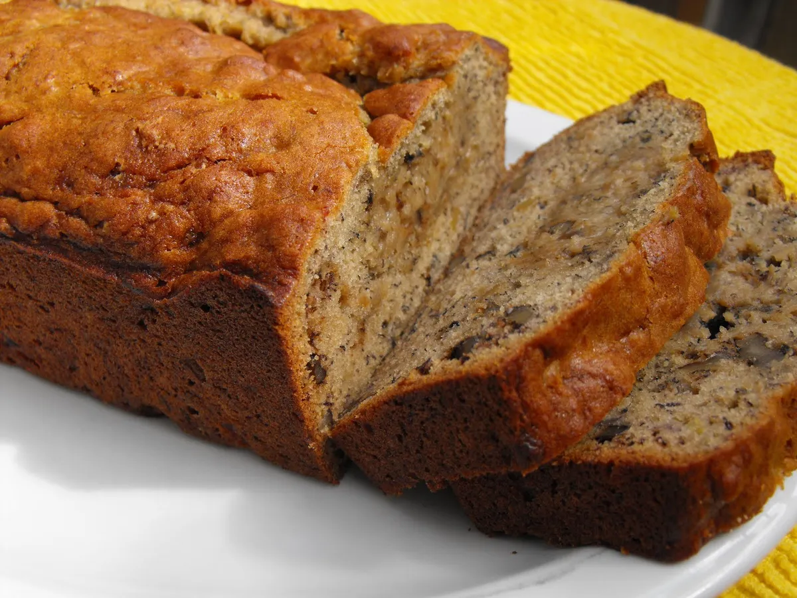

Moist Banana Bread

Description
Put those ripe bananas to use in the best banana bread recipe ever. Moist and delicious, it's easy to make—one bowl, no need for a mixer!
This banana bread has been the most popular recipe on Simply Recipes for over 10 years. Thousands of people make it every day. Why?
Because it really is the best banana bread recipe, period. You can mix everything in one bowl, you can vary the amount of sugar or bananas. And the secret to its great flavor? Melted butter.
Ingredients
- 2 to 3 medium (7" to 7-7/8" long) very ripe bananas, peeled (about 1 1/4 to 1 1/2 cups mashed)
- 1/3 cup (76g) butter, unsalted or salted, melted
- 1/2 teaspoon baking soda (not baking powder)1/2 teaspoon baking soda (not baking powder)
- 1 pinch salt
- 3/4 cup (150g) sugar (1/2 cup if you would like it less sweet, 1 cup if more sweet)
- 1 large egg, beaten
- 1 teaspoon vanilla extract
- 1 1/2 cups (205g) all-purpose flour
Steps
- Preheat the oven and prepare the pan:
Preheat the oven to 350°F (175°C), and butter an 8 x 4-inch loaf pan.
- Mash the bananas and add the butter:
In a mixing bowl, mash the ripe bananas with a fork until completely smooth. Stir the melted butter into the mashed bananas.
- Mix in the remaining ingredients:
Mix in the baking soda and salt. Stir in the sugar, beaten egg, and vanilla extract. Mix in the flour.
- Bake the bread: Pour the batter into your prepared loaf pan. Bake for 55 to 65 minutes at 350F
- Cool and serve